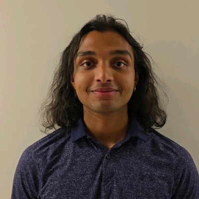
I am a fourth-year Mechanical Engineering student in the Aerospace Option at UBC Okanagan with experience in CAD design, manufacturing, plant engineering, and applied project development. My strongest work lies at the intersection of technical design and practical implementation, where engineering decisions must be not only effective on paper, but also buildable, maintainable, and useful in real operating conditions.
This portfolio highlights a combination of capstone, robotics, and industrial engineering projects that reflect both my academic background and co-op experience at IKO. Through these projects, I have worked on challenges involving mechanical design, safety improvements, structural modifications, system integration, and prototype development, while strengthening my ability to communicate and collaborate in real engineering environments.
I am particularly interested in opportunities involving product development, mechanical design, CAD, prototyping, and project execution, where I can continue applying hands-on problem solving to meaningful engineering work.
Featured sections
Use the navigation above to view project work, the Hermes capstone page, and a brief engineering reflection.
About
Profile
My academic and project experience has been shaped by a strong interest in design that works in the real world. I enjoy taking projects from rough concept through design refinement, communication with stakeholders, and practical implementation.
During co-op, I worked on plant-wide engineering initiatives that included access improvements, structural changes, dust collection upgrades, and safety improvements. That experience strengthened both my technical communication and my ability to work across design, procurement, and installation.
Skills and tools
- SolidWorks, AutoCAD, Inventor
- 3D printing, assembly, prototyping
- Engineering documentation and project coordination
- MATLAB, Python, technical problem solving
- Manufacturing support and plant engineering workflows
Experience
My co-op experience included maintenance, safety, structural, and process-related projects within an industrial manufacturing environment. I regularly worked with vendors, supervisors, consultants, and trades to move projects from problem identification toward a buildable solution.
Portfolio Projects
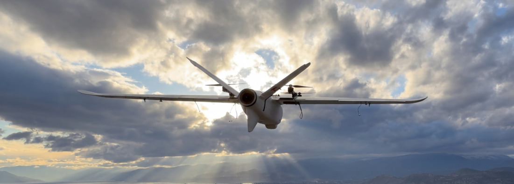
Hermes VTOL Relay UAV
This project focused on the design and development of Hermes, a hybrid VTOL relay UAV intended to support search and rescue operations in remote terrain. Rather than replacing an existing search drone, Hermes was developed as a support platform to extend communication range between the operator and the primary UAV during mountanous off-grid missions. The project involved concept selection, configuration evaluation, CAD development, prototype assembly, testing, and iterative redesign to create a practical and deployable relay platform.
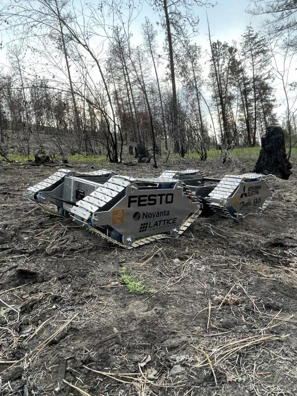
EMBR Robot
EMBR was a modular robotics project developed for wildfire-related applications, with a focus on detecting and assessing underground ember conditions. My primary responsibility was designing the full rear back plate assembly, including the rotating and actuating metal probe used to measure ember temperature beneath the ground surface. This work involved developing a mechanical system that could support probe motion, integrate with the broader robot structure, and remain realistic to manufacture and assemble. The project gave me hands-on experience in mechanism design, integration, and translating a functional requirement into a practical engineered component.
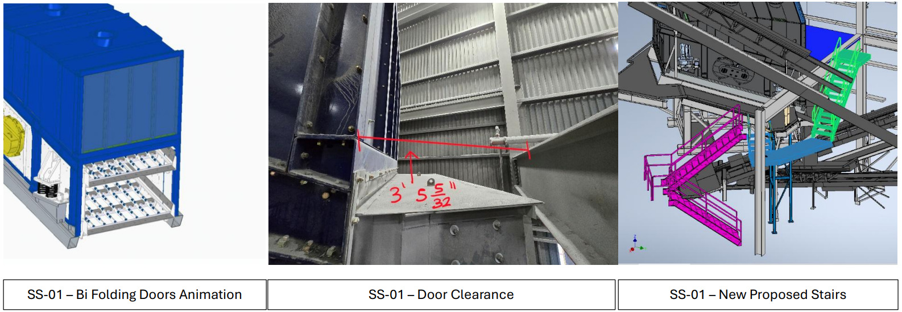
Screen Deck Safety Access Improvements
This project focused on improving maintenance access to Secondary Screen 01 (SS-01), where the existing door arrangement created significant usability and safety limitations. Two of the three existing access doors were poorly located, with one requiring ladder access on the top deck and another blocked by an adjacent platform. Working with internal stakeholders and external vendors, the project explored revised access solutions including bi-fold doors, stair relocation, and platform modifications to create a safer and more practical configuration for ongoing maintenance activities.
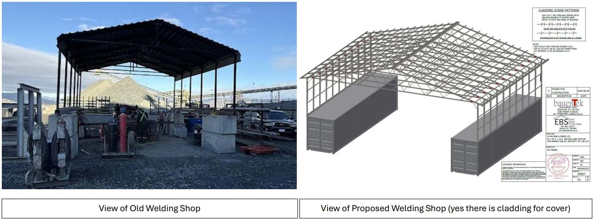
Welding Workshop Re-Development
This project involved the redevelopment of the welding shop into a larger and more functional maintenance workspace. The existing structure had been intended as a temporary solution but had become a long-term work area that no longer met operational needs. The redesign added storage, improved working space, electrical servicing for welders, and sufficient access for equipment and loader entry. The project required coordination with structural, civil, and electrical parties during design development, foundation work, and structural installation planning.
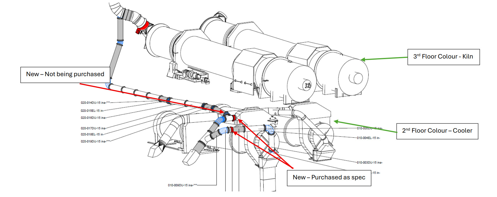
Colour Plant Dust Collection Improvement
This project addressed ongoing maintenance issues within the colour plant dust collection system by redesigning the ducting between the cooler and the dust collector. Frequent plugging and limited access had made the original arrangement inefficient for operations. The revised design introduced hot air from the kiln floor above to preheat the cooler ducting and reduce product buildup on the baghouse filters. The scope also included updated duct routing, larger duct sizing, damper integration, and insulation changes. Overall, the project improved serviceability, reduced anticipated maintenance demands, and created a more robust and maintainable dust collection configuration for the plant.
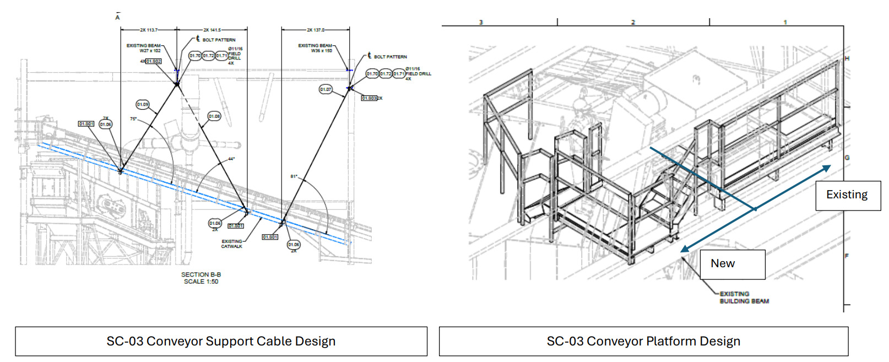
Conveyor Platform Reinforcement
This project addressed a structural and safety concern associated with a conveyor platform. Review of the existing support arrangement showed that the platform could safely support only about 500 lb, which was insufficient for routine maintenance activities and emergency response situations. Since maintenance or rescue work could require at least three workers along with tools and equipment, the target design capacity was increased to 2,500 lb. Because major site constraints prevented the use of conventional beam supports due to equipment travel below the platform, the design approach instead used cable supports connected to roof joists and I-beams to better distribute the load through the structure. These cables were also designed to be removable when required, allowing clearance for overhead crane operation. Overall, the project involved coordination with engineering and maintenance personnel to develop a safer and more practical platform configuration that could better support both day-to-day maintenance and emergency use.
Plant Wide Working From Height Safety Improvements
This project focused on improving plant-wide safety for tasks performed at height, particularly for work above 4 feet. The scope included the design and addition of new fall arrest and fall restraint anchor points at key locations throughout the plant, along with several supporting access improvements. These included rolling stairs, platform ladders, single-person manlifts, and mini jib cranes to make maintenance work safer and more practical. These upgrades improved access to elevated work areas, reduced reliance on unsafe temporary methods, and helped create a more consistent and code-conscious approach to working-from-height activities.
Plant Hollow Wall Analysis
This project investigated the structural integrity of walls in the plant that had been constructed years after the original building. These walls were identified during an HVAC unit installation, where concerns were raised about their suitability for supporting the design structure. The analysis confirmed that the walls were hollow and did not meet the required building design code for wind loading. As a result, we worked with an external civil consulting engineer to evaluate reinforcement options and develop a practical solution that would bring the walls to the required standard. The project involved reviewing the existing wall condition, confirming code-related deficiencies, coordinating engineering input, and planning reinforcement measures so the walls could safely support future installations and plant modifications.
Capstone Project | Hermes VTOL Relay UAV
The Story
Search and rescue operations in mountainous and heavily forested terrain are often limited by terrain obstruction, which can block line of sight and cause unstable communication links between the operator and the primary UAV. Rather than designing a completely new search drone, Hermes was developed as a support platform that could act as an aerial communication relay and help extend operational range in remote terrain.
The project was shaped around a practical client need identified through work with North Shore Rescue. The goal was to create a relay UAV that could launch vertically in confined areas, operate in real field conditions, and improve communication reliability without requiring a runway or major changes to the existing search workflow.
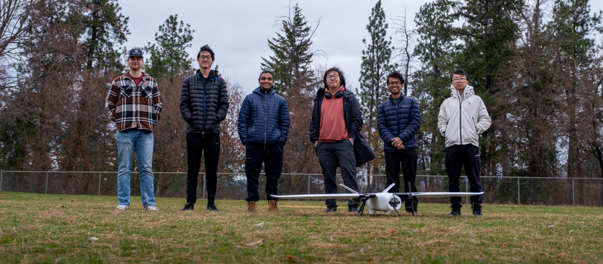
Objective
- Maintain more reliable communication between the operator and search UAV in remote terrain
- Support beyond visual line of sight style operation in obstructed environments
- Allow rapid deployment from confined areas without runway infrastructure
- Develop a practical and cost-conscious relay platform using realistic components
1. Concept Selection
Early in the project, multiple UAV roles and configurations were considered, including fixed-wing, quadcopter, and hybrid VTOL concepts. After reviewing client needs and the operational challenge of maintaining communication in mountainous terrain, the team selected a hybrid quadplane VTOL configuration. This layout provided the best balance of vertical deployment, stable hover performance, mechanical simplicity, and endurance potential for the relay role.

2. Early Prototype Challenges
Once the first flight-ready prototype was assembled, testing revealed that the aircraft could not achieve the intended lift performance. Initial suspicion pointed toward battery support, but further testing showed that the main issue was airflow interference created by the motor placement above the wing. This stage of the project highlighted the importance of iterative testing and using physical results to refine the design.
3. Redesign and Integration
The wing extender system was redesigned so that the lift motors were positioned below the wing, which removed the major airflow interference problem and greatly improved quadcopter performance. Alongside the mechanical redesign, the project involved CAD development, prototype assembly, and integration planning for the DJI D-RTK 3 Multifunctional Station as the main communication relay payload.
This phase moved the project from a rough proof of concept toward a more practical engineering solution that better reflected real deployment and integration requirements.
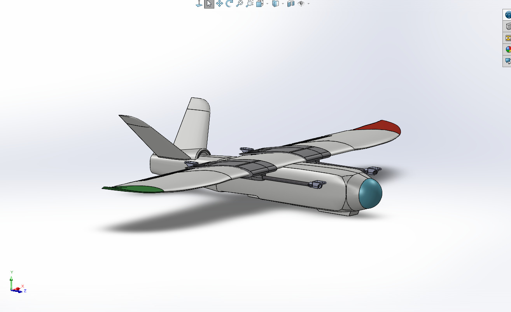
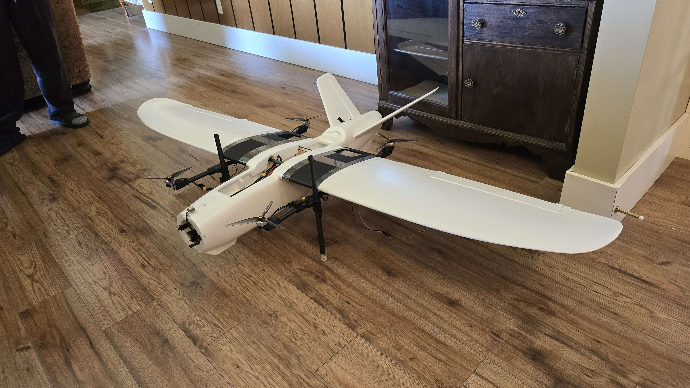
4. Final Prototype and Outcomes
Final testing demonstrated stable vertical liftoff and hover in confined spaces, confirming that the redesigned platform satisfied the main deployment requirement for obstructed terrain. The final UAV featured a wingspan of about 2.0 m, a maximum takeoff weight of 7.1 kg, and an estimated maximum flight duration of roughly 1.5 hours.
While full fixed-wing transition validation remained limited by propulsion issues and timeline constraints, the project still established a strong proof of concept for a practical civilian relay UAV and identified clear next steps in propulsion refinement, transition validation, and autonomy.
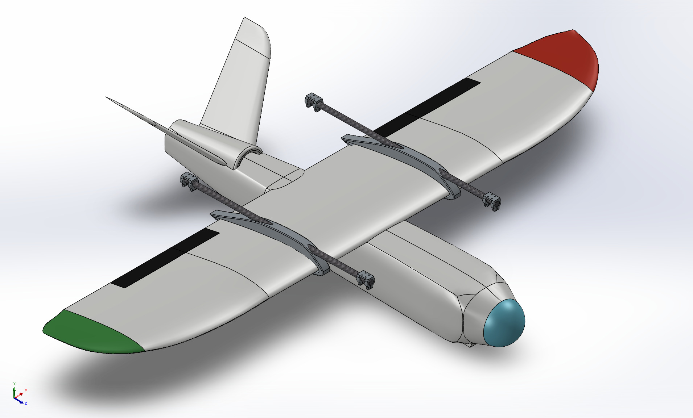
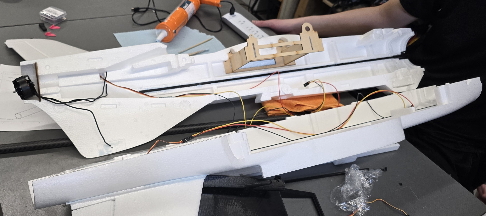
Flight Test Video
Project focus
- Extend communication range in remote search and rescue terrain
- Support existing UAV operations instead of replacing them
- Balance deployment flexibility with improved endurance potential
- Develop a feasible capstone prototype within realistic constraints
Key outcomes
- Stable vertical liftoff and hover were achieved in confined spaces
- Final UAV reached a wingspan of about 2.0 m and MTOW of 7.1 kg
- Estimated maximum flight duration was roughly 1.5 hours
- Future work remains in propulsion refinement, transition validation, and autonomy
Reflection
Over the past few years, engineering has become much more than just a degree to me. Through both capstone and co-op, I learned that good engineering usually does not come from getting everything right the first time. Most of the real progress came from testing, finding what was not working, and then improving the design in a practical way. That process taught me patience, resilience, and the importance of being able to adapt when things do not go according to plan.
My co-op experience showed me another side of engineering that I had not fully comprehended before. A design can look good on paper, but that does not mean much unless it can actually be built, maintained, and clearly communicated to the people using it. Working on real industrial projects made me much more aware of the connection between technical design, safety, practical constraints, and the needs of the people involved. It helped me grow not just as a student, but as someone preparing to take on real responsibility in the field.
Reaching the point of earning my iron ring is something I am genuinely proud of. To me, it represents much more than finishing university. It represents the hard work, sacrifices, setbacks, and growth that came with getting through this program. It also represents the responsibility that comes with becoming an engineer. The iron ring is a reminder that engineering is not only about technical ability, but also about humility, accountability, and understanding that the work we do can directly affect other people.
Looking back, I feel proud of how much I have grown, both technically and personally. Looking ahead, I want to keep working in environments where I can combine CAD, design thinking, hands-on problem solving, and real implementation. That is the kind of work I enjoy most, and where I feel I can make the strongest contribution. As I move into the next stage of my career, earning my iron ring feels like both an achievement and a reminder of the kind of engineer I want to become.